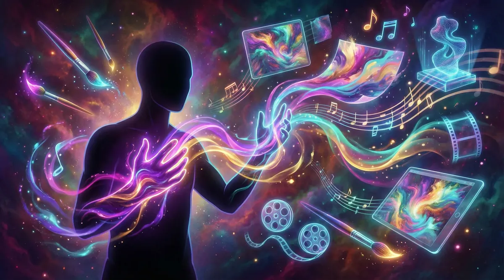

TRILHA 1 - PARTE 2: ARTE
🎨 Técnicas Avançadas e Profissionalização
Domine ferramentas avançadas, pós-produção, monetização e ética para transformar arte com IA em carreira profissional.

5
Módulos
50
Tópicos
Parte 2
de 2
~5h
Conteúdo
1.6
Ferramentas e Técnicas Avançadas de Geração
Dominar técnicas profissionais e recursos avançados
1.7
Da Geração à Pós-Produção e Refinamento
Refinar e finalizar obras com qualidade profissional
1.8
Arte com Propósito: Comunicação, Negócios e Causas
Aplicar arte com IA em contextos comerciais e sociais
1.9
Monetização e Construção de Audiência para Arte com IA
Transformar talento artístico em renda sustentável
1.10
O Futuro da Criatividade e a Ética na Arte com IA
Navegar questões éticas e antecipar tendências futuras